Identita domu
Upozornění – částečně hypotéza: Patro a střecha podle fotografie 1974; přízemí je na snímku zakryto autobusy a je hypotéza, hranice s 250 odečtena ze střechy.
Dům na jižní straně Šmeralova náměstí vpravo od nárožního domu 250; karta KSPPOP neg. 10.946 popisuje jeho fasádu z plochy náměstí, vlevo rohák 250, vpravo proluku po pekárně 253. Živá databáze má strukturu 251 nově (snapshot z 11. 9. 2026 ji neznal).
Použité prameny: fotografie cp_251_001 (karta KSPPOP neg. 10.946, 1974), náčrt střech KSPPOP 251/12, GIS půdorys 329, sdílené snímky náměstí.
Kde je dům na fotografiích
Dům je na snímku v červeném rámečku, sousední domy jsou popsány čísly a každý otvor má ID, podle kterého se počty otvorů kontrolují proti modelu. Kliknutím otevřete větší obrázek.

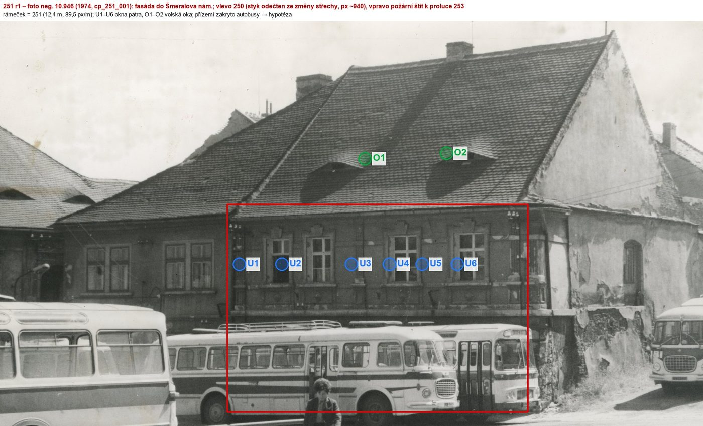
přízemí zakryto autobusy → hypothesis_ids
Přílohy v databázi (11)
Všechny přílohy struktury 251 v databázi Libuše, načtené živě 23. 10. 2026 (jen pro čtení) a otevřené. Kliknutím otevřete větší náhled.

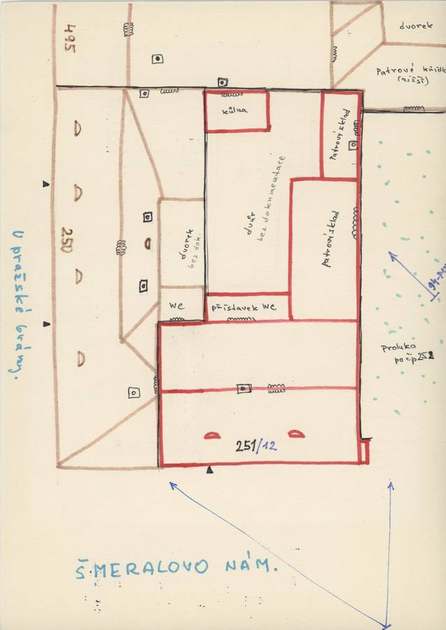
plán / výkres
SHA-256 1d2e63d74ca0…

fotografie
SHA-256 d79e22187f04…

fotografie
SHA-256 d822c17be8ad…

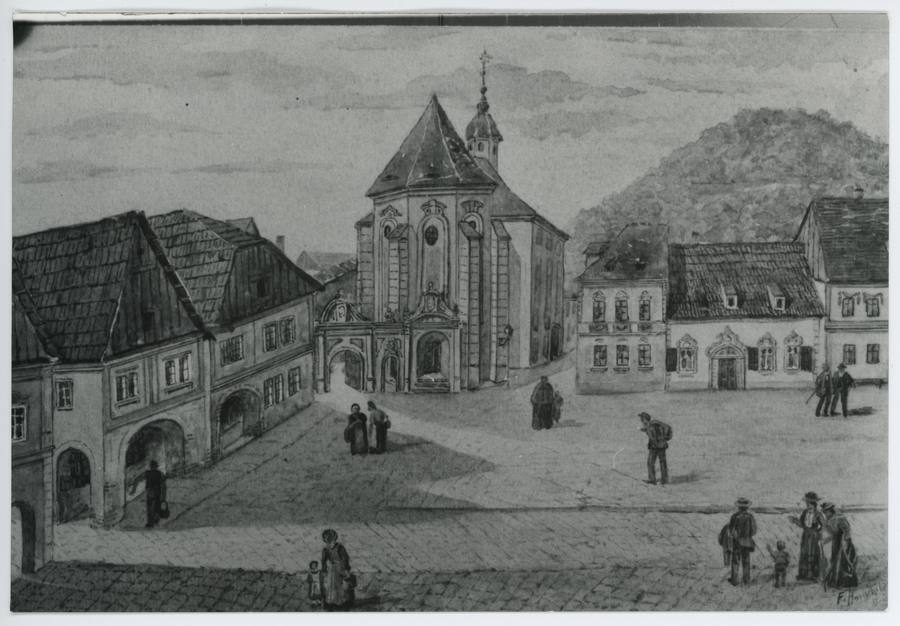
fotografie
SHA-256 1c5b387ad44c…

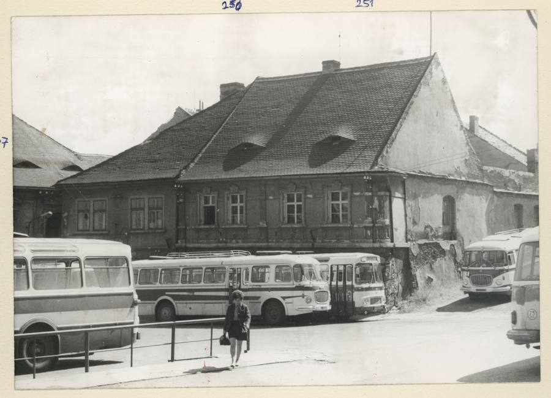
fotografie
SHA-256 197f67fe344e…

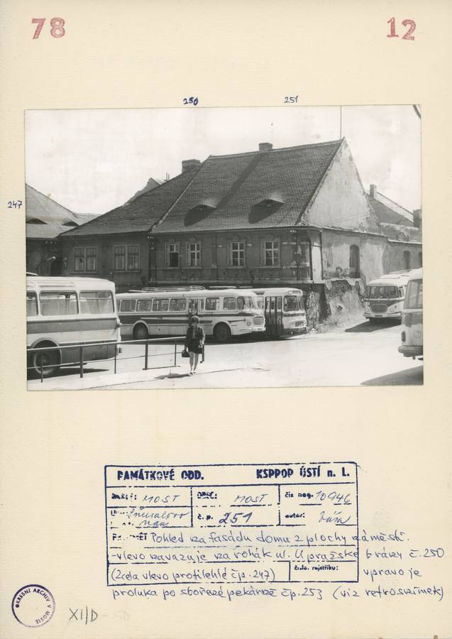
archivní karta
SHA-256 38244d73cb7d…

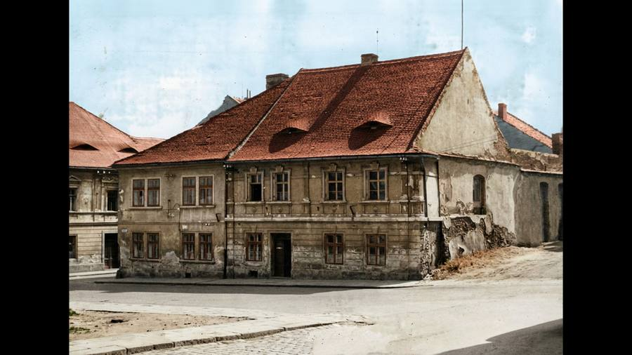
kolorovaná odvozenina
SHA-256 f3d4909f3102…

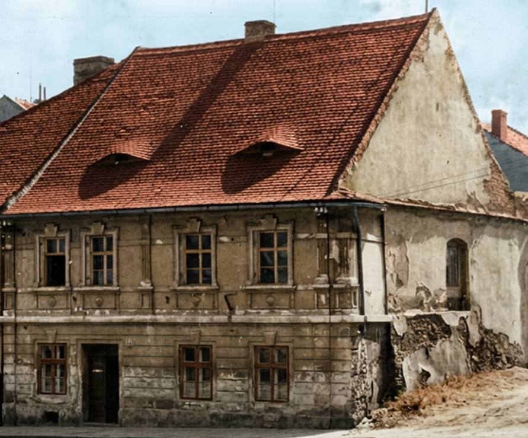
odvozenina bez tagu (kolorovaná / výřez / FRONT)
SHA-256 b3bbb2ee2b14…

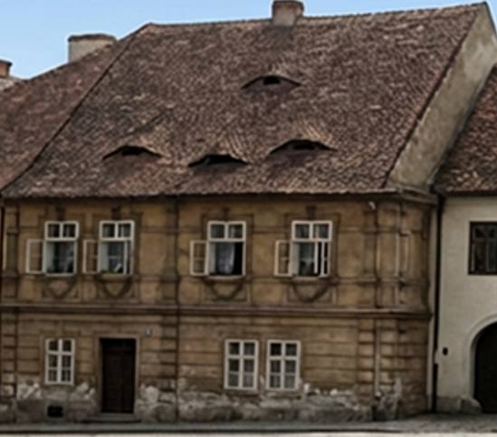
odvozenina bez tagu (kolorovaná / výřez / FRONT)
SHA-256 a59962841d9f…

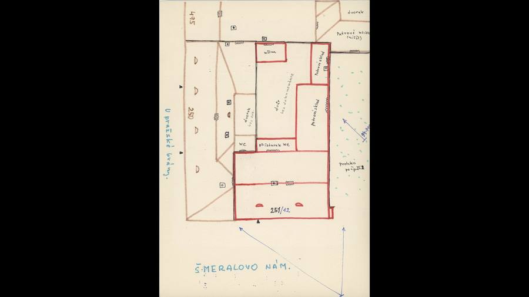
odvozenina bez tagu (kolorovaná / výřez / FRONT)
SHA-256 aadadc53bfb6…

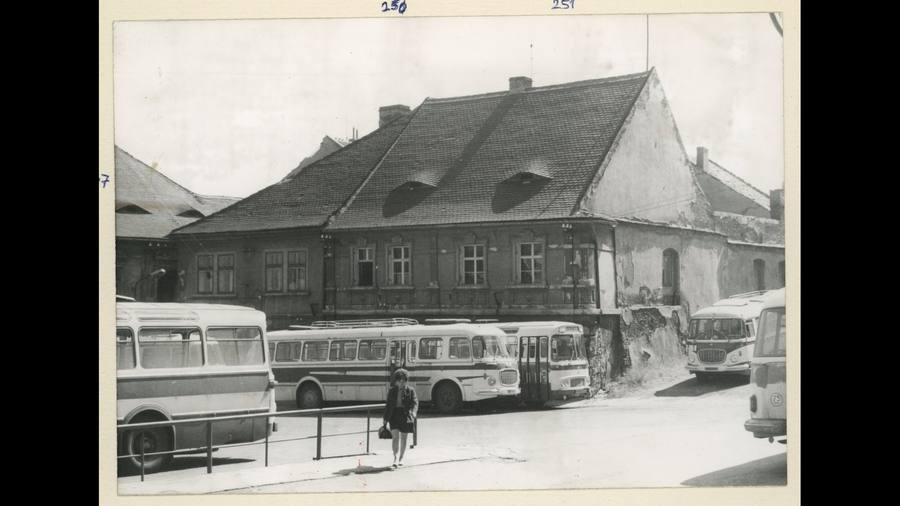
odvozenina bez tagu (kolorovaná / výřez / FRONT)
SHA-256 6d2487c871af…
Geometrie
| Revize geometrie | r1 |
|---|---|
| Úsek ulice | N · jižní strana Šmeralova náměstí (u ústí ulice) |
| Poloha | GIS budova 329, popisek 251, ulice U Pražské brány |
| Šířka průčelí | 12,40 m |
| Výška okapu | 7,80 m (odhad) |
| Podlaží | 2 |
| Střecha podle pramenů | sedlová střecha s hřebenem rovnoběžným s náměstím, valba k domu 250, požární štít k proluce 253, dvě volská oka (obočí); zadní patrový sklad podle GIS |
| Otvory / vikýře v modelu | 12 / 2 |
| Polygonů | 365 |
Kontrolní pohledy

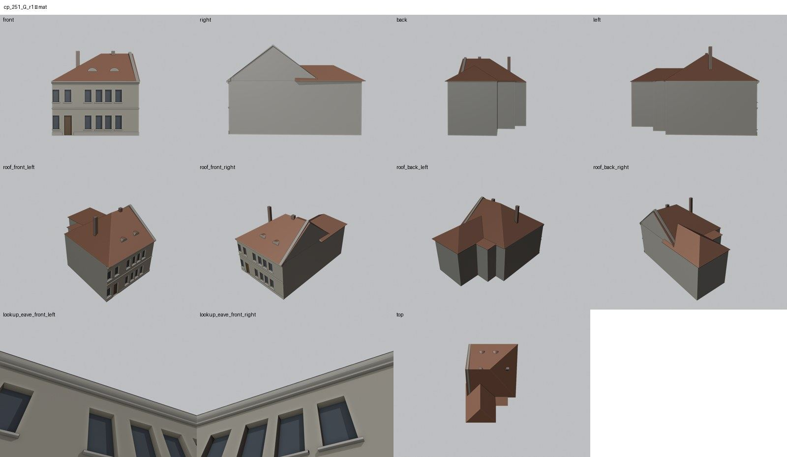

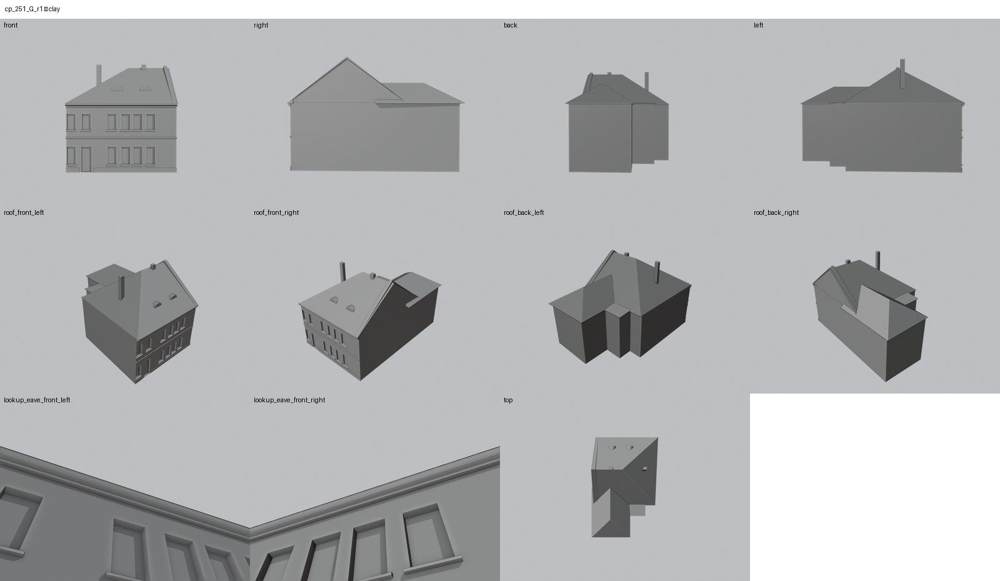

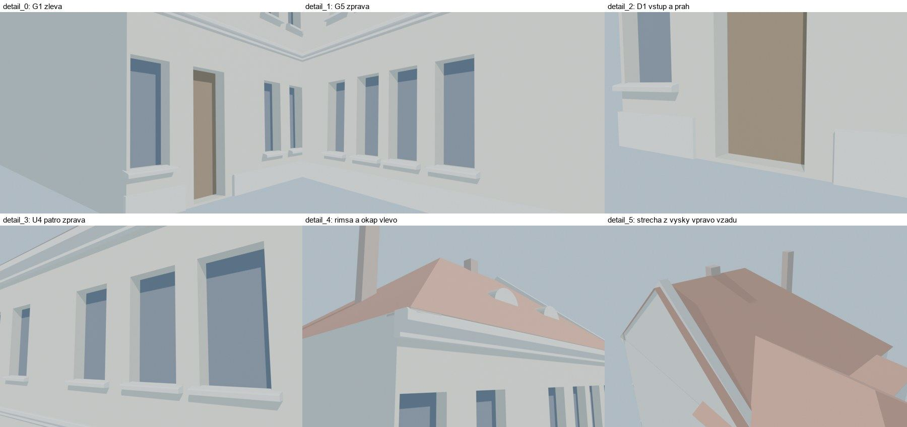
Kontrola modelu
| Brána geometrie (automaticky) | v pořádku |
|---|---|
| Uzavřené podkroví (GLB) | v pořádku: zásahy paprsků 0, nekryté zdivo 0,00 m², střecha nad prázdnem 0,00 m² |
| UV mapování | v pořádku: 0 zkolabovaných ploch z 365 |
| Síť | v pořádku |
| Počty otvorů proti pramenu | souhlasí zčásti (passed_partial) |
| Vizuální kontrola | prošla (Claude (Fable 5.1), 2026-10-28) |
| Kontrola střechy | prošla |
- hlavní průčelí: patro z foto (89,5 px/m), přízemí hypotéza (passed_partial)
Textury
bez textur (částečně hypotéza – jen prosté materiály)
Až Codex dodá texturovaný model, objeví se v prohlížeči nahoře volba Textury (Codex).
Hypotézy
Upozornění – částečně hypotéza: Patro a střecha podle fotografie 1974; přízemí je na snímku zakryto autobusy a je hypotéza, hranice s 250 odečtena ze střechy.
Vše níže je model_hypothesis, provisional, locked: false.
- přízemí je na jediném snímku zakryté autobusy – dveře a okna přízemí jsou hypotéza
- styk s 250 je odečten ze změny střešní plochy, ne ze spáry
- výšky z poměrů snímku (89,5 px/m) ±0,3 m; sklon střechy a hřeben jsou odhad
- zadní sklad má výšku okapu domu; přístavek WC a kůlna z náčrtu jsou nemodelované
Technický zápis hypotéz v plánu modelu (revize r1, bez diakritiky)
- poloha styku 250|251 na snímku (px ~940) – podle změny střešní plochy, ne podle viditelné spáry
- přízemí (dveře v ose 2, okna pod ostatními osami) zcela hypotetické – zakryto autobusy
- výšky z poměrů snímku ±0,3 m; sklon střechy a hřeben odhad
- zadní křídlo (patrový sklad) výška = okap domu, střecha hypotéza; přístavek WC a kůlna nemodelovány
Historie revizí modelu
- r1 28.10.2026: první stavba podle fotografie neg. 10.946 a náčrtu 251/12
Soubory
- Geometrie čp. 251, GLB (revize r1)
- Pracovní model: F:\MOST\output\u_prazske_brany_street_claude_2026-10-23\houses\cp251\r1\cp_251_G_r1.blend
- Plán modelu: F:\MOST\output\u_prazske_brany_street_claude_2026-10-23\houses\cp251\geometry_plan.json